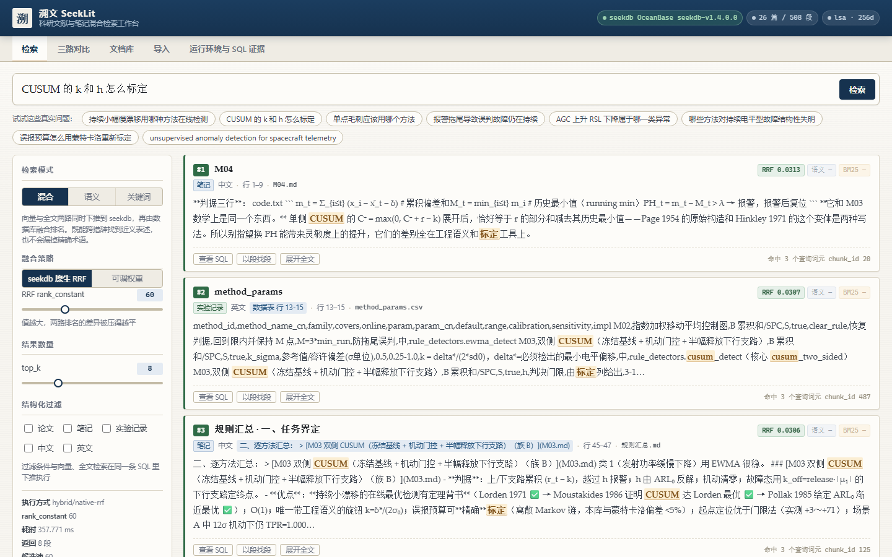
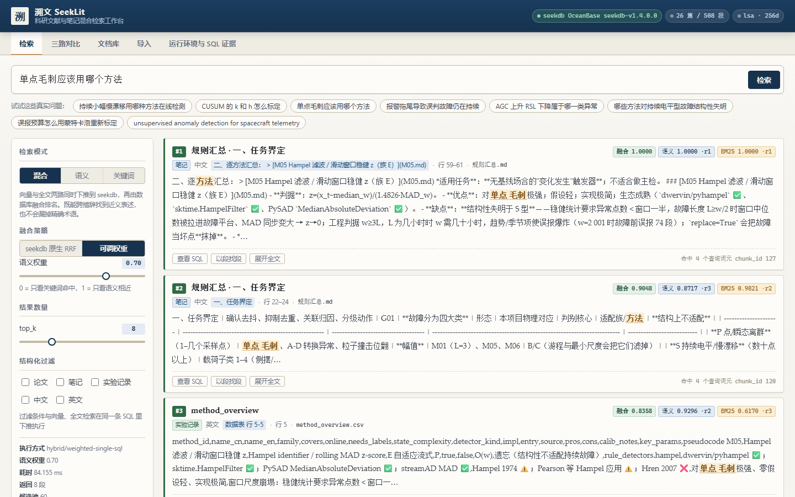
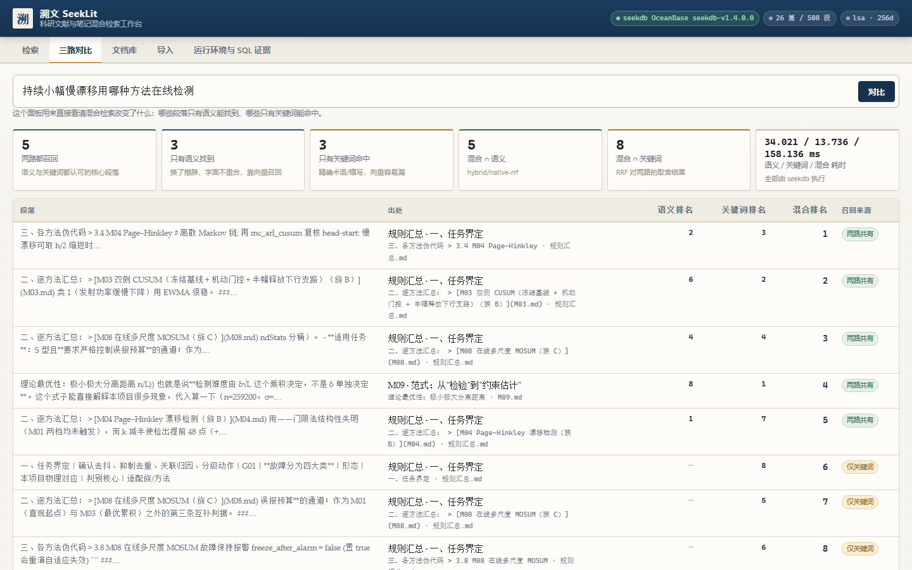
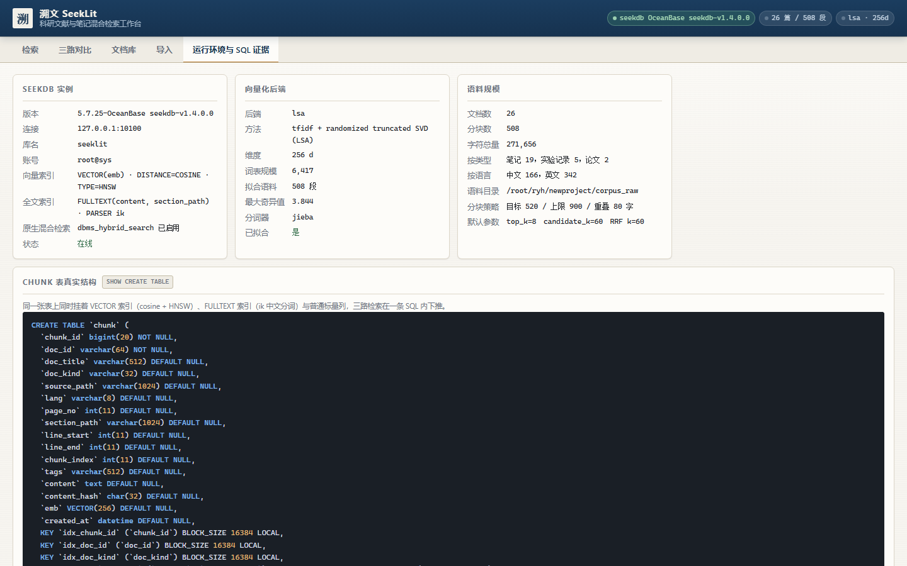

措辞对不上 → 字面检索失明
问「持续小幅慢漂移用哪种方法在线检测」，正文术语是 CUSUM / EWMA， 全文索引里没有「在线检测」这个词组可命中；只有向量能跨措辞召回。
OceanBase seekdb v1.4.0.0 · 仅使用 seekdb · 零其他向量/全文引擎
溯文 SeekLit 把论文、课程笔记、实验记录导入 seekdb，在同一张表、同一条 SQL 里
同时下推向量检索（cosine + HNSW）、全文检索（ik 分词 + BM25）与结构化过滤，
并用 seekdb 原生 dbms_hybrid_search 在数据库内部完成 RRF 融合。
本页内嵌一份真实查询结果快照：不连服务器，也能切换检索路径、拖权重滑块、改 RRF 常数，
每个分数都用快照记录的原始 vsim / bm25 在你的浏览器里重算。
题目方向是「文献与资料检索」：把论文、课程笔记或实验记录导入 seekdb，按语义和关键词混合检索，
快速找到相关段落和出处。溯文 SeekLit 的答卷是一个端到端可复现的系统：
导入管线（pdf / md / txt / csv 分块与标题合成）→ 离线向量化（LSA，可切换 ollama / openai / sbert）→
seekdb 单表三索引 → 四路检索与三路对比 → 标准库 http.server 支撑的检索工作台 →
真实结果快照导出供静态站点离线交互。
工程上刻意做了两个「反潮流」的选择，都有实测理由：Web 层只用 Python 标准库 （部署机出网仅十几 KB/s，FastAPI 依赖树装不动）；向量化默认离线 LSA （不联网下模型，256 维，词表 6,417，纯 numpy 的随机化截断 SVD）。 二者都不影响 seekdb 侧能力的展示，且让评审在任何机器上都能一键复现。
科研资料检索的难点是两类失败同时存在，而任何单一路径都只能防住一类：
问「持续小幅慢漂移用哪种方法在线检测」，正文术语是 CUSUM / EWMA， 全文索引里没有「在线检测」这个词组可命中；只有向量能跨措辞召回。
问「CUSUM 的 k 和 h 怎么标定」，k、h、ARL 是精确词元，
语义相近但参数不同的段落会挤掉真正讲标定的那一段；只有 BM25 能钉住。
问「AGC 上升 RSL 下降属于哪一类异常」，缩写词与方向组合是判据本身， 靠 ik 分词 + 全文索引精确命中，再靠融合把语义近邻一起带上来。
实测 8 个真实问题：平均 5.0 段两路都认可、3.0 段只有语义能找到、3.0 段只有关键词能命中、 混合后平均 4.5 个段落排名发生变动——融合不是装饰，它确实改变了结果。
semantic（VECTOR + cosine + HNSW + APPROXIMATE）、keyword（FULLTEXT + ik + BM25）、
hybrid 原生 RRF（融合发生在数据库内部）、hybrid 可调权重（单条 SQL 内归一化 + 加权）。
文档类型 / 语言 / 页码进 DSL 的 filter 子句，与 ANN、全文检索同一个执行计划下推，不是召回后再过滤。
同一问题在三条路径下的排名并排展示，「仅语义 / 仅关键词 / 两路共有」一眼看清混合检索改变了什么。
复用向量索引做段落到段落近邻：顺着一条判据段找到同族方法的伪代码与参数表行。
每次检索返回 seekdb 实际执行/生成的 SQL——包括原生混合检索的内部生成 SQL——前端可展开逐字核对。
search_log 记录每次查询的模式、权重、耗时、结果数与真实 SQL，可回溯复现。
把真实结果与每段原始 vsim / bm25 导出为 JSON；本页的交互演示就是拿它在你浏览器里重算的。
pdf 按页、md 按大纲、csv 按行块、txt 按滑窗分块；自动合成「文件名 · 首级标题」、识别中英文与文档类型。
下面每一段 SQL 都来自服务器真实查询（采集于 2026-10-30，原文见仓库
docs/SEEKDB_EVIDENCE.md 与 logs/verify_paths.txt）。
CREATE TABLE `chunk` (
`chunk_id` bigint(20) NOT NULL, `doc_id` varchar(64) NOT NULL,
`doc_title` varchar(512), `doc_kind` varchar(32), `source_path` varchar(1024),
`lang` varchar(8), `page_no` int(11), `section_path` varchar(1024),
`line_start` int(11), `line_end` int(11), `tags` varchar(512),
`content` text, `content_hash` char(32),
`emb` VECTOR(256),
KEY `idx_doc_id` (`doc_id`), KEY `idx_doc_kind` (`doc_kind`),
FULLTEXT KEY `ft_content` (`content`) WITH PARSER ik,
FULLTEXT KEY `ft_section` (`section_path`) WITH PARSER ik,
FULLTEXT KEY `ft_chunk` (`content`, `section_path`) WITH PARSER ik,
VECTOR KEY `v_chunk_emb` (`emb`) WITH (DISTANCE=COSINE, TYPE=HNSW, LIB=VSAG,
M=16, EF_CONSTRUCTION=200, EF_SEARCH=64)
); -- 注意：没有用户主键（原因见下）
应用侧只提交 DSL（multi_match + knn + rank.rrf），
用 dbms_hybrid_search.get_sql() 取回 seekdb 自己生成的 SQL，解剖出四条硬事实：
_score = ifnull(1 / (_fts._keyword_rank + 60), 0)
+ ifnull(1 / (_vs._semantic_rank + 60), 0) -- 60 即 rank_constant，改它立刻改融合
-- 全文分支窗口：LIMIT 1200 = 20 × rank_window_size(60)，固定 20 倍关系
-- 语义分支打分：_semantic_score = round(1 - cosine_distance(emb, q) / 2, 8)
-- 两路用隐藏列 __pk_increment 做 FULL JOIN ← chunk 表不能有用户主键的原因
-- （带用户主键直接 ERROR 1235: table with user provided primary key not supported）
只有复合索引 ft_chunk(content, section_path) 时，原生 DSL 每次混合检索都报
ERROR 1191: Can't find FULLTEXT index matching the column list，
而手写 MATCH(content, section_path) 却正常。根因就在上面的生成 SQL 里：
原生全文分支永远生成单列 match(`content`) 与 match(`section_path`)，
而 MATCH 命中全文索引的规则是列清单与某个索引完全相等。
于是补 ft_content、ft_section 两个单列索引服务原生 DSL，
保留 ft_chunk 服务手写复合 MATCH；旧表用 python -m app.cli migrate 在线补齐，不重灌数据。
WITH v AS (SELECT chunk_id, (1 - cosine_distance(emb, q)) AS vsim ... APPROXIMATE LIMIT 60),
f AS (SELECT chunk_id, MATCH(content, section_path) AGAINST(? IN NATURAL LANGUAGE MODE) AS bm25 ...),
vn AS (SELECT *, MAX(vsim) OVER () AS vmax, ROW_NUMBER() OVER (ORDER BY vsim DESC) AS vrank FROM v),
fn AS (SELECT *, MAX(bm25) OVER () AS fmax, ROW_NUMBER() OVER (ORDER BY bm25 DESC) AS frank FROM f)
SELECT ..., ROUND(0.6 * vsim/vmax + 0.4 * bm25/fmax, 6) AS fused
FROM vn FULL JOIN fn ON vn.chunk_id = fn.chunk_id ... -- FULL JOIN 保住「只被一路召回」的段落
ORDER BY fused DESC LIMIT 8 -- seekdb 侧平均 9.90 ms
截图来自真实运行的检索工作台（1440×900，headless Edge 采集），每张都对应一条可复现的深链。




下面的工作台不连任何服务器。数据是 2026-10-30 从 seekdb 导出的真实快照
（snapshot.json，8 个问题 × 候选池每段的原始 vsim / bm25）。
切换路径、拖滑块时，分数由你的浏览器基于这些原始值重算；
当权重恰好落在 0 / 0.3 / 0.5 / 0.7 / 1.0 五档时，直接展示 seekdb 真实执行的排序并打「真实执行」徽章。
不做人工标注，因此不报 precision/recall；报的是可观测指标与可复算的原始日志
（logs/eval_postfix.txt、logs/smoke_api.txt、logs/verify_paths.txt）。
| 问题 | 语义 | 关键词 | 混合 | 两路共有 | 仅语义 | 仅关键词 | 排名变动 |
|---|---|---|---|---|---|---|---|
| 持续小幅慢漂移用哪种方法在线检测 | 8 | 8 | 8 | 5 | 3 | 3 | 5 |
| CUSUM 的 k 和 h 怎么标定 | 8 | 8 | 8 | 3 | 5 | 5 | 5 |
| 单点毛刺应该用哪个方法 | 8 | 8 | 8 | 6 | 2 | 2 | 4 |
| 报警拖尾导致误判故障仍在持续 | 8 | 8 | 8 | 5 | 3 | 3 | 4 |
| AGC 上升 RSL 下降属于哪一类异常 | 8 | 8 | 8 | 4 | 4 | 4 | 3 |
| 哪些方法对持续电平型故障结构性失明 | 8 | 8 | 8 | 7 | 1 | 1 | 6 |
| 误报预算怎么用蒙特卡洛重新标定 | 8 | 8 | 8 | 5 | 3 | 3 | 4 |
| unsupervised anomaly detection for spacecraft telemetry | 8 | 8 | 8 | 5 | 3 | 3 | 5 |
| 路径 | seekdb 侧 | 端到端（含向量化） | 说明 |
|---|---|---|---|
| semantic | 4.12 ms | 21.8 ms | VECTOR + HNSW 近似 ANN |
| keyword | 3.70 ms | 20.6 ms | FULLTEXT + ik + BM25 |
| hybrid / 原生 RRF | 116.38 ms | 134.3 ms | 窗口函数 + 双路召回的固有代价 |
| hybrid / 加权单 SQL | 9.90 ms | — | CTE + 窗口归一化 + FULL JOIN |
| 验证样例 | 想证明什么 | 实测结果 |
|---|---|---|
| 「持续小幅慢漂移用哪种方法在线检测」走语义路 | 正文无「在线检测」词组时向量能否跨措辞召回 | Top1 = 规则汇总 · M04 Page–Hinkley 段（vec=0.4213）；该段仅语义排名 2、关键词排名 4 |
| 「CUSUM 的 k 和 h 怎么标定」走关键词路 | 精确词元能否钉住参数标定段 | Top1 = M04 判据段（bm25=2.4459 起），命中词元 k / h / 标定 高亮 |
| 同一问题切原生 RRF | 融合是否真的改变排名 | Top1 变为 M04 伪代码段（RRF 0.0320），8 段中 5 段排名变动 |
doc_kind=['paper'] 过滤 | 过滤是否与向量/全文同计划下推 | n=8 / 110.961 ms，结果全部为论文段 |
| HTTP 冒烟 46 项 | 端点、参数校验、目录穿越拦截、四路径 SQL 回显 | 46 PASS / 0 FAIL |
# 一键复现（隔离 seekdb 实例 → 依赖 → 建表导入 → 效果验证 → 快照 → 起服务）
git clone https://github.com/helloworldzxcvbnm/seeklit.git && cd seeklit
cp .env.example .env # 全部配置项都有默认值，可跳过
bash scripts/setup.sh # 语料放 corpus_raw/{notes,records,papers}/
# 打开 http://127.0.0.1:8090/
# 单步
bash scripts/start_seekdb.sh # 隔离实例：独立 base-dir + 端口 10100
pip install -r requirements.txt # 必装仅 pymysql + pypdf
python -m app.cli ingest --mode rebuild
python -m app.cli search "CUSUM 的 k 和 h 怎么标定" --mode hybrid --fusion rrf --show-sql
python -m app.cli compare "单点毛刺应该用哪个方法"
python -m app.cli eval # 重跑上面的效果表
python -m app.cli snapshot # 导出本站内嵌的快照 JSON
bash scripts/stop_seekdb.sh
环境要求：Python ≥ 3.10、seekdb v1.4.0.0（MySQL 协议）。
建表 DDL 见 sql/schema.sql；配置项见 .env.example；
向量化后端可用 EMBED_BACKEND=ollama|openai|sentence_transformers 一行切换（切换后需重灌 emb）。
从空目录到可发布站点，全部编码、调试、验证、截图与站点构建都在 Qoder 会话内完成
（完整实录见仓库 docs/QODER_DEVLOG.md）。
| 时间（10-29 → 10-30） | 事件 |
|---|---|
| 23:15 | 立项：方向、语料范围（排除可能涉密的标书目录）、仅用 seekdb 的约束 |
| 23:29–00:08 | 五模块骨架 + 分块管线 + 离线 LSA 向量化后端（预留三个神经后端开关） |
| 00:12–00:26 | 撞 ERROR 1191 → 写探针脚本定位根因 → 三全文索引方案 + 在线 migrate 命令 |
| 00:33–00:34 | 采集第一版 SQL 证据；发现 plink 传中文被重编码，检索词改为代码内常量 |
| 00:39–00:43 | 耗时剖析抓出 embedder 单例失效（global 拼写错误，每次重读 6.5 MB 模型）；修复后 semantic 91→9.9 ms |
| 00:44–00:52 | 标题合成修复并重灌语料；46 项 HTTP 冒烟；快照导出（Decimal / 向量字面量 / 截断处理） |
| 00:56–01:04 | 前端深链 + headless Edge 桌面截图；冒烟复跑 46/46；eval 复跑得到修复后效果表 |
| 01:05–01:35 | 仓库化（schema.sql / 启停脚本 / 证据文档 / 开发记录）→ 推送 GitHub → 构建本站并发布 |
Qoder 在本项目里做对的三件事：把报错当线索（1191 与 1235 直接塑造了表结构，并变成可展示的解剖材料）； 所有数字可复算（效果表、耗时、排名差异都附采集脚本与原始日志）；演示不依赖服务器（快照带原始分数，浏览器重算）。